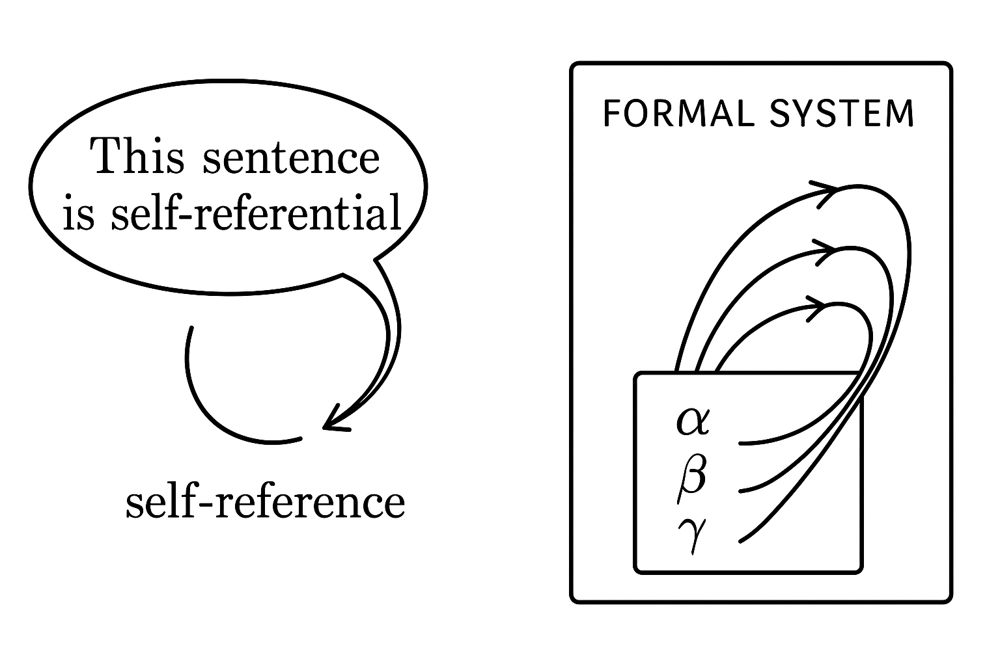
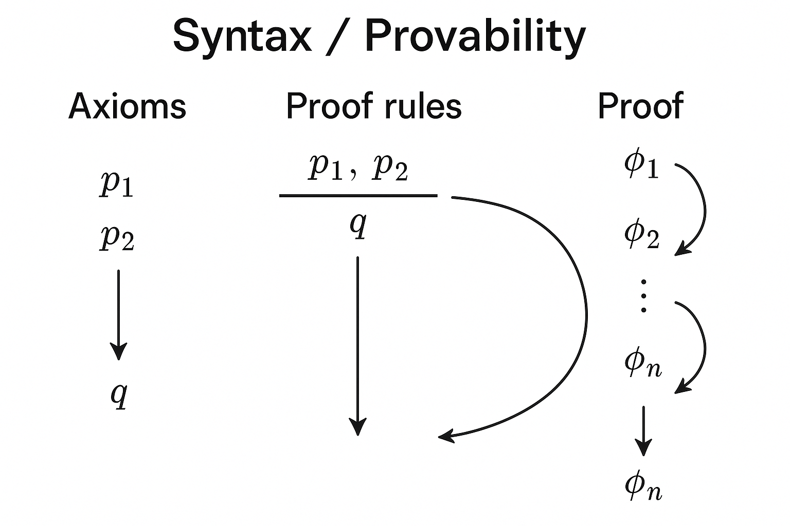
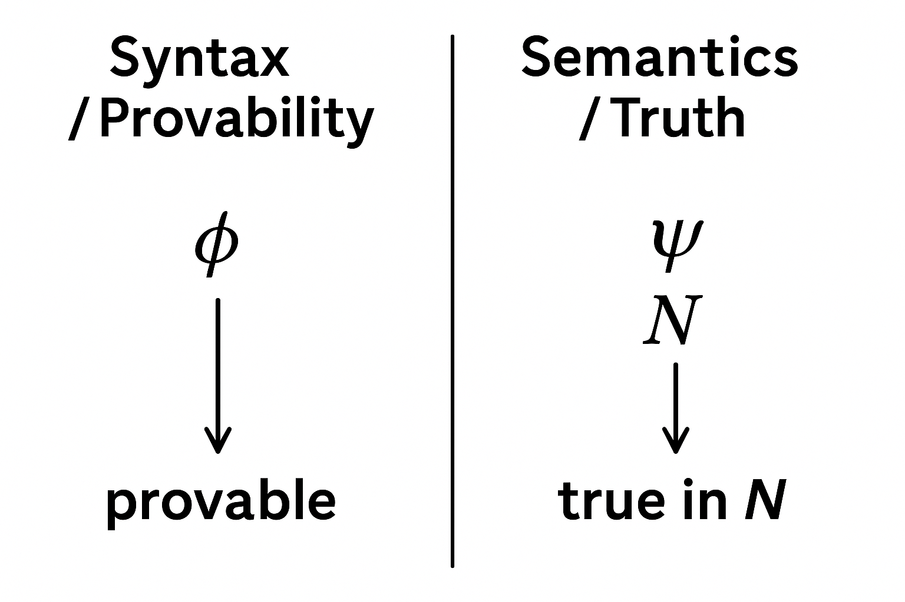
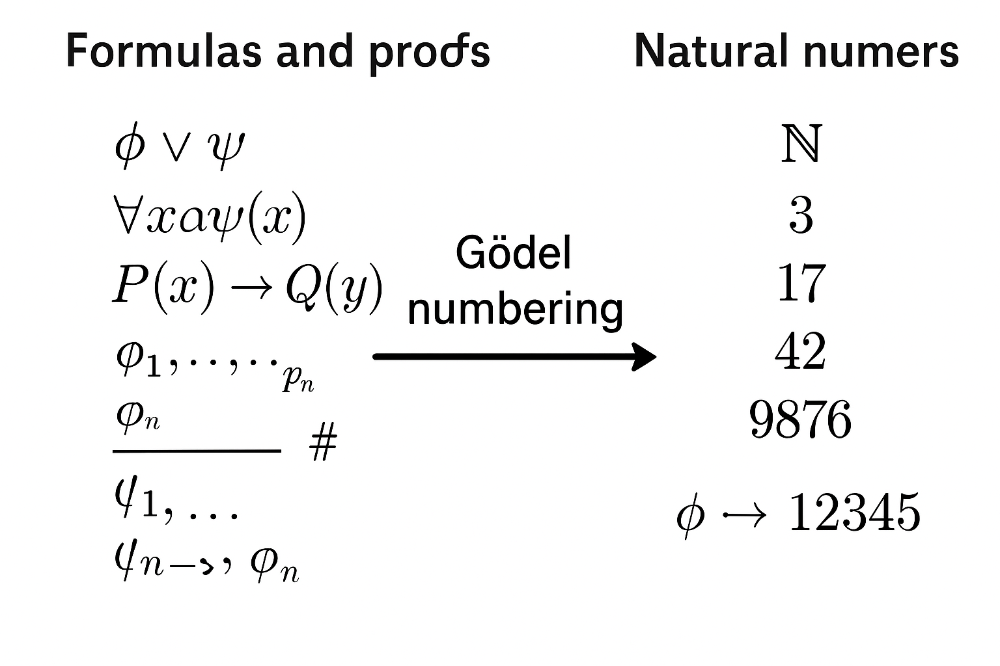
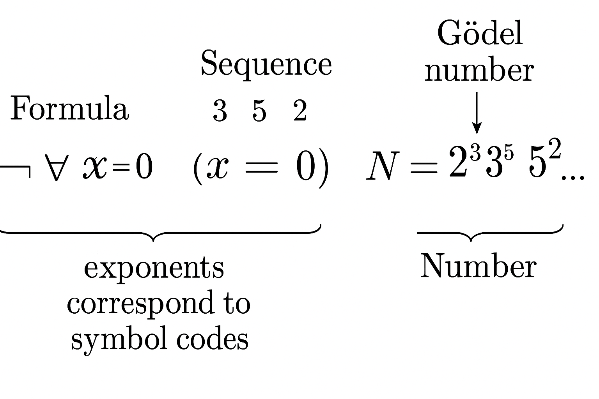
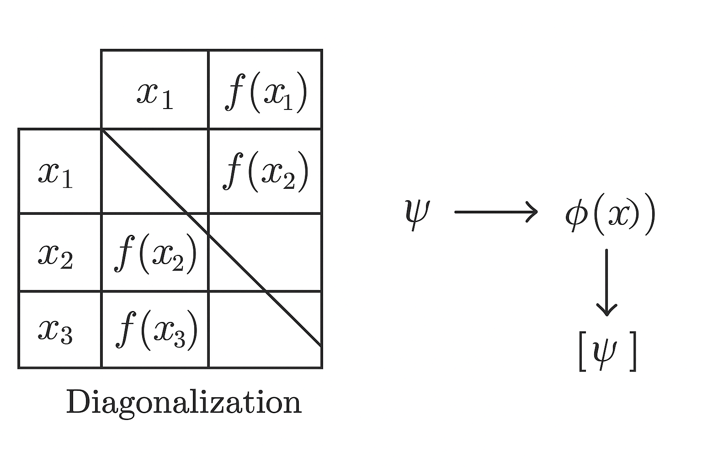
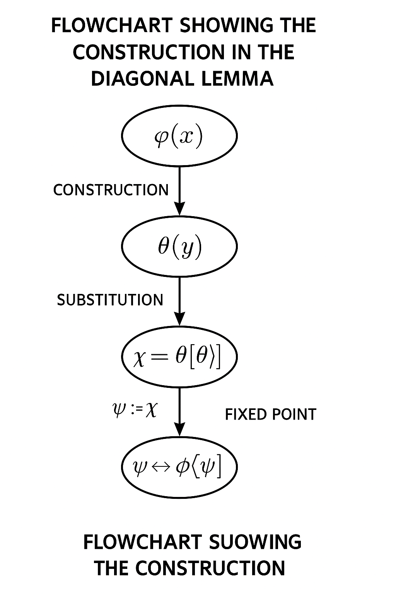
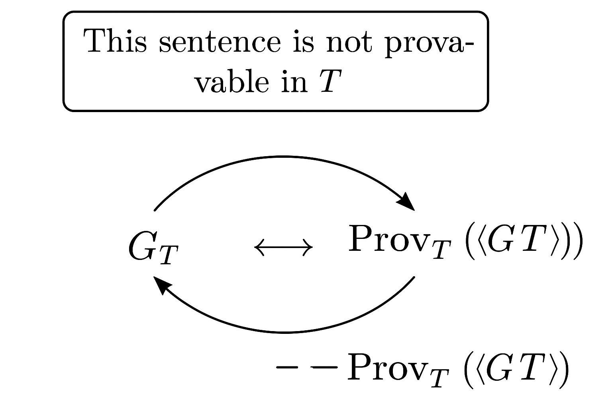
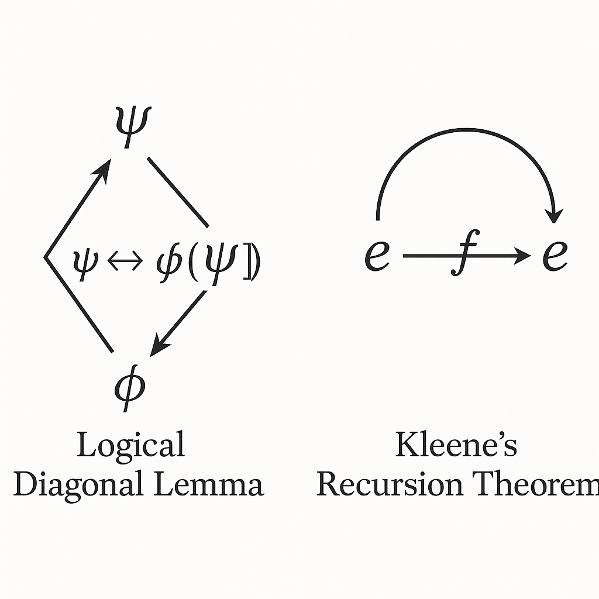

第 1 講：自指邏輯主題 1 —— 從語言與形式系統到自指的問題
本講作為整個「深入講解自指邏輯」教程的起點，目標是扎實建立之後討論 Gödel 不完備性定理、Tarski 不可定義性定理與不可判定性、以及 von Neumann 自複製機器所必須的「形式化背景」。
我們會先說明：
- 什麼是「自指」與「語言中的自指結構」；
- 如何用嚴謹的數學方式描述「語句談論自身」；
- 什麼是形式理論、語法、語意、證明系統；
- 初步介紹「編碼」與「算術化」的概念，為 Gödel 編碼鋪路。
本講目標不直接證明 Gödel 或 Tarski 的定理，而是讓你在邏輯與數學結構上對「自指」有深刻直覺，並做好形式技術準備。
1. 自指現象的數學化：從語言遊戲到形式結構
1.1 日常語言中的自指與悖論
在日常語言中，自指 (self-reference) 是指一句話直接或間接地「談論自己」。最經典的例子是「說謊者悖論」：
這句話是假的。
若這句話為真，則它所陳述「這句話是假的」也必須成立，因此它是假的；
若這句話為假，則「這句話是假的」不成立，故它應該為真。
於是我們得到一個似乎無法一致賦予真值的句子。這顯示：
- 語言可以表述對自身的描述；
- 不受限制的自指與真值概念結合會產生悖論。
在形式邏輯中，我們不滿足於非形式的悖論陳述，而想問：
- 能否在嚴格定義的語言與證明系統中「構造」類似自指語句？
- 這種自指形式是否必然導致矛盾，或者只導致「不完備」？
Gödel 與 Tarski 的工作就是在這裡展開：利用算術化的語言與形式系統，構造能夠「談論自身可證性／真值」的語句，並分析其邏輯後果。

圖 1-6: A conceptual illustration showing a sentence in a speech bubble pointing an arrow back to itself, labeled "self-reference", next to another diagram that shows a formal system as a box, and arrows from formulas inside the box referring back to the box itself. Minimalistic, black-and-white, mathematical style.
Prompt: A conceptual illustration showing a sentence in a speech bubble pointing an arrow back to itself, labeled "self-reference", next to another diagram that shows a formal system as a box, and arrows from formulas inside the box referring back to the box itself. Minimalistic, black-and-white, mathematical style.
1.2 從自然語言到形式語言
為了避免自然語言的模糊，我們使用形式語言 (formal language)。一個形式語言通常包括：
- 符號集 \( \Sigma \)：變數、常數、函數符號、謂詞符號、邏輯連接詞、量詞、括號等。
- 語法規則：哪些符號串是「合法的公式」、「項」、「句子」。
例：一階算術語言 \( \mathcal{L}_A \) 通常包含：
- 變數符號：\( x, y, z, x_0, x_1, \dots \)
- 常數：\( 0 \)
- 函數符號：單一後繼函數 \( S(\cdot) \)、二元加法 \( + \)、二元乘法 \( \cdot \)
- 謂詞符號：等號 \( = \)
- 邏輯符號：\( \lnot, \land, \lor, \rightarrow, \forall, \exists, (, ) \)
每個形式語言只處理符號與其合法組合；在純粹語法層次，並沒有「真或假」的概念。
為了談論真值，我們需要：
- 一個結構 (structure) 或模型 (model) \( \mathcal{M} \)，對語言中符號賦予解釋；
- 一個為每個句子 \( \varphi \) 指定「在 \( \mathcal{M} \) 中是否為真」的語意定義。
這樣我們就能將自然語言的「這句話為真」轉化為形式語言中「句子 \( \varphi \) 在結構 \( \mathcal{M} \) 中為真」的形式敘述。
2. 語法與語意：證明與真理的分離
2.1 語法：可證性與形式推理
在數學邏輯中，一個形式理論 \( T \) 是由：
- 一個語言 \( \mathcal{L} \)，
- 一組公理 \( \mathrm{Ax}_T \subseteq \text{Sent}(\mathcal{L}) \)，
- 推理規則，例如 Modus Ponens 等，
所構成的系統，用來產生「可證的公式」。
我們寫
\[
T \vdash \varphi
\]
表示：在理論 \( T \) 中，存在有限長度的證明序列，自公理與推理規則可導出公式 \( \varphi \)。
這一切都是語法的：只是關於符號列與有限操作的組合。
形式上，可以定義「證明」為一串公式
\[
\pi = (\varphi_0, \varphi_1, \dots, \varphi_n)
\]
其中每個 \( \varphi_i \) 要嘛是公理，要嘛由前面公式經推理規則推得，而最後一個 \( \varphi_n = \varphi \)；於是我們說 \( \pi \) 是 \( \varphi \) 在 \( T \) 中的證明。
語法層面的核心觀點：
- 是否「可證」是一個純機械 (mechanical) 的性質；
- 可證性的概念可以在計算理論與遞歸理論下精確刻畫；
- 哥德爾的關鍵創意在於：把「可證性」這個語法概念編碼進算術語句中，使算術能「談論自身的可證性」。

圖 1-7: Diagram showing the syntactic world: axioms, proof rules, and proofs as sequences of formulas, with arrows indicating derivations; labeled "Syntax / Provability". No semantics yet.
Prompt: Diagram showing the syntactic world: axioms, proof rules, and proofs as sequences of formulas, with arrows indicating derivations; labeled "Syntax / Provability". No semantics yet.
2.2 語意：模型與真理
相對於「可證」的語法概念，我們有「為真」的語意概念。給定一個結構 \( \mathcal{M} \)（例如自然數結構 \( \mathbb{N} \)）以及一個語句 \( \varphi \)，我們寫：
\[
\mathcal{M} \models \varphi
\]
表示「\( \varphi \) 在模型 \( \mathcal{M} \) 中為真」。
真值的定義是遞迴地給出的：對原子公式（如 \( t_1 = t_2 \)）、複合公式（如 \( \varphi \land \psi \)）與量詞（如 \( \forall x\, \varphi \)）分別定義。
以一階語言為例，對原子公式
\[
R(t_1, \dots, t_n)
\]
其在模型 \( \mathcal{M} \) 下的真值取決於：
- \( \mathcal{M} \) 的宇宙集 \( M \)；
- 語言中每個符號在 \( \mathcal{M} \) 的解釋，例如常數符號 \( c \) 對應某個元素 \( c^{\mathcal{M}} \in M \)，函數符號 \( f \) 對應某個實際的函數 \( f^{\mathcal{M}}: M^k \to M \)，
- 謂詞符號 \( R \) 對應某個關係 \( R^{\mathcal{M}} \subseteq M^n \)。
量詞的語意則基於「賦值」函數 \( s: \text{Var} \to M \)，例如
\[
\mathcal{M}, s \models \forall x\, \varphi
\quad \text{當且僅當} \quad
\text{對所有 } a \in M,\, \mathcal{M}, s[x \mapsto a] \models \varphi.
\]
之後 Tarski 的工作將顯示：在足夠強的算術系統內，「真值」這樣的語意概念無法被該系統自己以一個一階謂詞完全刻畫。這正是 Tarski 不可定義性定理的核心。

圖 1-2: Two-column diagram: left column "Syntax / Provability", right column "Semantics / Truth". Arrows from formulas to "provable" on the left, and from formulas plus a model N to "true in N" on the right, emphasizing their distinction.
Prompt: Two-column diagram: left column "Syntax / Provability", right column "Semantics / Truth". Arrows from formulas to "provable" on the left, and from formulas plus a model N to "true in N" on the right, emphasizing their distinction.
2.3 語法 vs. 語意的張力：完全性與不完備性
Gödel 在 1930 年證明了一階邏輯的完全性定理：
\[
\text{對任一一階句子 } \varphi, \quad
\text{若所有模型都滿足 } \varphi \ (\models \varphi),
\quad \text{則 } \vdash \varphi.
\]
也就是說，一階邏輯本身的證明系統在語義上是完整的。
然而，Gödel 於 1931 年接著證明的算術不完備性定理則表明：
- 對任何足夠表達自然數算術的遞歸可列理論 \( T \) 而言，都存在某個句子 \( G_T \) 使得：
\[
\text{若 } T \text{ 是一致的，則 } T \nvdash G_T \text{ 且 } T \nvdash \lnot G_T.
\]
關鍵在於：
不完備性定理並不是關於一階邏輯本身，而是關於以一階邏輯為語言的特定理論（如 Peano 算術）。
該定理的證明核心技術之一，就是把「自指」具體形式化：構造一個在算術中「談論自己不可證」的句子。
3. 自指的形式基礎：編碼與算術化
3.1 初步直覺：如何讓數學談論自身？
為了在算術中談論「某個公式」、「某個證明」、「某個推理」等純符號對象，Gödel 採取策略：
- 將每個符號、公式、證明序列等「語法對象」都編碼為自然數；
- 用算術公式來描述這些自然數之間的性質；
- 讓算術句子能夠描述「這個數字編碼了一個證明」、「這個數字編碼的公式滿足某性質」等。
如此一來，算術系統內部就可以「談論自己的語法」，進而構造一個語句 \( G_T \) 表示：
\[
\text{“此語句在 } T \text{ 中不可證。”}
\]
要實現這一步，我們需要兩個手段：
- 一個有效的編碼 \( \# : \text{(語法對象)} \to \mathbb{N} \)；
- 一個能夠在算術中定義「編碼關係」的謂詞。

圖 1-1: Illustration showing formulas and proofs on the left being mapped via a function "#" to natural numbers on the right. Arrows labeled "Gödel numbering", with examples like "φ ↦ 12345".
Prompt: Illustration showing formulas and proofs on the left being mapped via a function "#" to natural numbers on the right. Arrows labeled "Gödel numbering", with examples like "φ ↦ 12345".
3.2 一個典型的 Gödel 編碼架構
我們不在此固定唯一的編碼方式，而是展示一個典型範型，重點在於「可遞歸性」與「可在算術中定義」。
令語言中的基本符號為一個有限或可數集合：
\[
\Sigma = \{ s_0, s_1, s_2, \dots \}
\]
為每個符號 \( s_i \) 指定一個自然數編碼 \( n_i \ge 1 \)。
例如（簡化示意）：
- \( s_0 = 0 \) 編碼為 \( 1 \)，
- \( s_1 = S \) 編碼為 \( 2 \)，
- \( s_2 = + \) 編碼為 \( 3 \)，
- \( s_3 = \cdot \) 編碼為 \( 4 \)，
- \( s_4 = = \) 編碼為 \( 5 \)，
- \( s_5 = ( \) 編碼為 \( 6 \)，
- \( s_6 = ) \) 編碼為 \( 7 \)，
- \( s_7 = \lnot \) 編碼為 \( 8 \)，等等。
對一個有限的符號列 \( s_{i_0} s_{i_1} \dots s_{i_{k-1}} \)，例如一個公式，我們可以定義其 Gödel 數為：
\[
\#(s_{i_0} s_{i_1} \dots s_{i_{k-1}})
:= 2^{n_{i_0}} 3^{n_{i_1}} 5^{n_{i_2}} \dots p_k^{n_{i_{k-1}}},
\]
其中 \( p_j \) 是第 \( j \) 個質數（\( p_0 = 2, p_1 = 3, p_2 = 5, \dots \)）。
由於算術基本定理（每個 \( n \ge 2 \) 可唯一分解為質數冪的乘積），我們知道這個編碼是單射：不同的符號列具有不同的 Gödel 數。
更重要的是，這種編碼是遞歸的，意味著：
- 從一個符號列可有效計算其 Gödel 數；
- 反之，從一個自然數（在知道它是某符號列的 Gödel 數）也可以有效取回原始符號列，藉由質因數分解與指數讀取。
因此，我們可以在算術中引入一個二元謂詞 \( \mathrm{Seq}(x,y) \)，意指「\( x \) 是符號列 \( y \) 的 Gödel 數」；進一步也可以有謂詞 \( \mathrm{Proof}_T(p,\varphi) \) 表示「\( p \) 編碼了一個在理論 \( T \) 中以證明結束於公式 \( \varphi \) 的證明序列」。
當然，真正嚴格的做法是要證明這些謂詞都是遞歸的（或更精確地，原始遞歸）並且在適當的算術理論（例如 Robinson 算術 \( Q \) 或 Peano 算術 \( \mathrm{PA} \)）內可表示。
這就導向下一個主題：「可表示性」。

圖 1-4: A picture of the prime factorization representation of a Gödel number, e.g., N = 2^3 3^5 5^2 ..., with annotations showing how exponents correspond to symbol codes in a formula. Clear arrows indicating sequence ↔ number.
Prompt: A picture of the prime factorization representation of a Gödel number, e.g., N = 2^3 3^5 5^2 ..., with annotations showing how exponents correspond to symbol codes in a formula. Clear arrows indicating sequence ↔ number.
3.3 可表示性與算術中的語法謂詞
讓算術「談論自身」的關鍵技術語言是：在算術內可表示的關係。
形式定義如下。
定義 3.1（關係的表示性）
令 \( R \subseteq \mathbb{N}^k \) 為一個 \( k \)-元關係。若存在一個 \( k \)-元算術公式 \( \varphi_R(x_1,\dots,x_k) \) 使得：
\[
\begin{aligned}
&\text{(1) 若 } R(n_1,\dots,n_k) \text{ 成立，則 } \mathbb{N} \models \varphi_R(\overline{n_1},\dots,\overline{n_k}); \\
&\text{(2) 若 } R(n_1,\dots,n_k) \text{ 不成立，則 } \mathbb{N} \models \lnot \varphi_R(\overline{n_1},\dots,\overline{n_k}),
\end{aligned}
\]
其中 \( \overline{n} \) 是表示自然數 \( n \) 的標準項（例如 \( S(S(\dots S(0)\dots)) \)）。
則稱 \( \varphi_R \) 在自然數結構 \( \mathbb{N} \) 中定義（表示）了關係 \( R \)。
更進一步，若我們考慮某理論 \( T \)（如 \( \mathrm{PA} \)），則可以要求：
\[
\begin{aligned}
&\text{(1') 若 } R(n_1,\dots,n_k) \text{ 成立，則 } T \vdash \varphi_R(\overline{n_1},\dots,\overline{n_k}); \\
&\text{(2') 若 } R(n_1,\dots,n_k) \text{ 不成立，則 } T \vdash \lnot \varphi_R(\overline{n_1},\dots,\overline{n_k}).
\end{aligned}
\]
若一個遞歸（可計算）關係都在 \( T \) 中可這樣表示，我們說 \( T \) 對遞歸關係具有良好的表示性。
Gödel 的重要技術結論是：對於足夠強的算術理論，所有原始遞歸關係都可在理論中被表示。
特別是，我們可以得到：
- 一個公式 \( \mathrm{Proof}_T(p,\varphi) \) 表示「\( p \) 編碼為 \( T \) 中的一個以 \( \varphi \) 結束的證明」；
- 一個公式 \( \mathrm{Prov}_T(x) \)（一元）表示「存在 \( p \) 使得 \( p \) 是某個證明，結尾公式的 Gödel 數是 \( x \)」。
形式上：
\[
\mathrm{Prov}_T(x) \equiv \exists p\, \mathrm{Proof}_T(p,x).
\]
一旦這個語法性質被算術公式捕捉，我們就可以在算術語言中構造「談論自己是否可證」的句子。這正邁向 Gödel 不完備性定理的核心「自指句」構造。
4. 自指的核心工具：對角化與固定點定理
4.1 康托對角化的邏輯變形
自指技術與「對角化」有深刻關係。
康托 (Cantor) 的對角化原本用來證明實數不可數，但在邏輯中我們常以「對角論證」來產生無法被某類列表完全捕捉的對象。
邏輯版本的對角化大致精神為：
給定一個將公式（或語句）映到性質的編碼方式，我們構造一個「在第 \( n \) 個位置與第 \( n \) 個公式不同」的對象，使之「逃避」任何試圖完整列舉的機制。
在自指邏輯裡，我們有一個更精準的版本：對角引理（也稱固定點引理）。
它說明：只要可以進行 Gödel 編碼與可表示性，就可以為任意謂詞 \( \varphi(x) \) 構造一個句子 \( \psi \) 使得：
\[
\text{在 } \mathbb{N} \text{ 或適當理論 } T \text{ 中有：}
\quad \psi \leftrightarrow \varphi(\ulcorner \psi \urcorner)
\]
其中 \( \ulcorner \psi \urcorner \) 是 \( \psi \) 的 Gödel 數，而 \( \varphi(\ulcorner \psi \urcorner) \) 是將該數字代入 \( \varphi \) 中作為參數形成的新句子。

圖 1-3: Diagram of diagonalization: a table with formulas along the rows and their images under a function, and a diagonal highlighted. Next to it, a schematic of a sentence ψ with an arrow to its own Gödel number ⟦ψ⟧, which is plugged into a formula φ(x).
Prompt: Diagram of diagonalization: a table with formulas along the rows and their images under a function, and a diagonal highlighted. Next to it, a schematic of a sentence ψ with an arrow to its own Gödel number ⟦ψ⟧, which is plugged into a formula φ(x).
4.2 對角引理（固定點引理）的形式敘述
定理 4.1（對角引理 / 固定點引理）
設 \( T \) 為一個遞歸可列且足夠強的算術理論（例如包含 Robinson 算術 \( Q \)），並假設：
- 我們有一個 Gödel 編碼 \( \# \)，
- 以及一個在 \( T \) 中可表示的替換函數 \( \mathrm{Sub}(x,y) \)，滿足：「\( \mathrm{Sub}(x,y) = z \) 表示從編碼為 \( x \) 的公式中，把其自由變數 \( v \) 都替換為編碼為 \( y \) 的數字，得到公式的 Gödel 數為 \( z \)」。
那麼，對任何一元公式 \( \varphi(x) \)，存在一個句子 \( \psi \)（無自由變數）使得：
\[
T \vdash \psi \leftrightarrow \varphi(\ulcorner \psi \urcorner).
\]
這個 \( \psi \) 被稱為 \( \varphi \) 的一個固定點（或自指句）。
這一定理是自指邏輯的核心。Gödel 的「此句不可證」句就是取
\[
\varphi(x) = \lnot \mathrm{Prov}_T(x)
\]
的固定點。
而 Tarski 在談論真理不可定義時，也使用類似的結構，只是將 \( \varphi(x) \) 解釋為「編碼為 \( x \) 的句子為假」之類的語意性陳述。
因此，對角引理是後續多個深刻結果的共同基礎。
4.3 對角引理的構造性證明（概要）
我們給出 \( T \) 內對角引理的一個簡要證明。
技術細節（例如精確定義 \( \mathrm{Sub} \) 的表示性）可在後續講次或參考文獻中細查。
證明思路：
-
定義一個二元公式 \( \beta(y,z) \)，直觀上表示：「\( z \) 是將編碼為 \( y \) 的一元公式 \emph{對自身代入} 所得到的句子的 Gödel 數」。
形式上：
\[
\beta(y,z) \equiv \exists x\, \big( x = y \land \mathrm{Sub}(x,y) = z \big).
\]
在實務中，我們選擇一個更合適的公式使語意等價即可。
-
接著，給定一元公式 \( \varphi(x) \)，我們想要句子 \( \psi \) 滿足：
\[
\psi \leftrightarrow \varphi(\ulcorner \psi \urcorner).
\]
換句話說，令 \( \theta(y) \) 為：
\[
\theta(y) \equiv \exists z\, \big( \beta(y,z) \land \varphi(z) \big),
\]
我們希望某個句子 \( \psi \) 滿足 \( \psi \leftrightarrow \theta(\ulcorner \psi \urcorner) \)。
-
注意 \( \theta \) 是一元公式，因此可以考慮其 Gödel 編號函數型的「自用」：
\[
\chi := \theta(\ulcorner \theta \urcorner).
\]
這是一個明確的句子（無自由變數），因為 \( \ulcorner \theta \urcorner \) 是一個具體自然數，其標準表示 \( \overline{\ulcorner \theta \urcorner} \) 可以直接代入 \( \theta(y) \) 得到句子。
-
現在，根據 \( \beta \) 的語意，我們有：
\[
T \vdash \chi \leftrightarrow \varphi(\ulcorner \chi \urcorner).
\]
此處要利用 \( \beta \) 的定義以及 \( \mathrm{Sub} \) 的性質，證明 \( \theta(\ulcorner \theta \urcorner) \) 正是將 \( \varphi \) 套用於 \( \chi \) 的編號後所得。
這一步是技術核心，但原理上是：\( \theta \) 的定義就是要保證此「自用」行為等價於「將自身代入」。
-
令 \( \psi := \chi \)，就得到了所需的固定點：
\[
T \vdash \psi \leftrightarrow \varphi(\ulcorner \psi \urcorner).
\]
這個證明中最技術的部分，實際上在於證明「存在可表示的 \( \mathrm{Sub} \)」，以及把「自用」型的構造精確對應到「代入自身 Gödel 數」的操作。
不過哲學層面的直覺相當清楚：
我們構造一個句子，它在內部「把自己當作參數餵進某個謂詞」，於是得到一個真正意義上的「談論自身」的句子。

圖 1-8: Flowchart showing the construction in the diagonal lemma: start from φ(x), construct θ(y), then form χ = θ(⟦θ⟧), finally identify ψ := χ and conclude ψ ↔ φ(⟦ψ⟧). Emphasize substitution and fixed point.
Prompt: Flowchart showing the construction in the diagonal lemma: start from φ(x), construct θ(y), then form χ = θ(⟦θ⟧), finally identify ψ := χ and conclude ψ ↔ φ(⟦ψ⟧). Emphasize substitution and fixed point.
5. 自指的不同層級：語法自指 vs 語意自指
5.1 「此句不可證」與「此句為假」的差別
Gödel 與 Tarski 的自指都源自對角引理，但他們談論的是不同的對象：
- Gödel 自指：「此句在理論 \( T \) 中不可證。」
這是一個語法性質——是否存在證明。用的是 \( \mathrm{Prov}_T(x) \) 這樣算術內可表示的謂詞。
- Tarski 自指：「此句在結構 \( \mathbb{N} \) 中為假。」
這是一個語意性質——真值在模型中的評價。嘗試用一個算術謂詞 \( \mathrm{True}(x) \) 來表示「編號為 \( x \) 的句子在 \( \mathbb{N} \) 中為真」會導致不可定義性。
兩者都用到「把句子的 Gödel 數餵進某個謂詞」，其相似之處是明顯的；差別在於：
- 「可證性」是遞歸可枚舉的關係，可以被算術定義；
- 「真值」不是這樣一個簡單的遞歸關係，嘗試把它內含進同一階語言會產生矛盾（Tarski 定理）。
理解這個區別，是後續了解為何 Gödel 只導致「不完備」而非直接矛盾、為何 Tarski 要分層語言（對像語言 vs. 描述其真值的元語言）的關鍵。
5.2 語法自指：在系統內談論「證明」
如前述，我們有：
\[
\mathrm{Prov}_T(x) \equiv \exists p\, \mathrm{Proof}_T(p,x),
\]
並在 \( T \) 內可以證明一系列性質（Hilbert–Bernays–Löb 條件）例如：
- \( T \vdash \mathrm{Prov}_T(\ulcorner \varphi \urcorner) \rightarrow \mathrm{Prov}_T(\ulcorner \mathrm{Prov}_T(\ulcorner \varphi \urcorner) \urcorner) \)
- \( T \vdash \mathrm{Prov}_T(\ulcorner \varphi \rightarrow \psi \urcorner) \rightarrow \big( \mathrm{Prov}_T(\ulcorner \varphi \urcorner) \rightarrow \mathrm{Prov}_T(\ulcorner \psi \urcorner) \big) \)
- \( T \vdash \mathrm{Prov}_T(\ulcorner \varphi \urcorner) \rightarrow \varphi \)（此性質在不同版本下有細節差異，需要假定 \( T \) 的「\(\omega\)-一致」或反映性質）。
對角引理保證，我們能對 \( \varphi(x) = \lnot \mathrm{Prov}_T(x) \) 構造固定點 \( G_T \) 滿足：
\[
T \vdash G_T \leftrightarrow \lnot \mathrm{Prov}_T(\ulcorner G_T \urcorner).
\]
在假設 \( T \) 一致性之下，可以推導：
- \( T \nvdash G_T \)（否則 \( T \) 也能證明 \( \mathrm{Prov}_T(\ulcorner G_T \urcorner) \)，與 \( G_T \leftrightarrow \lnot\mathrm{Prov}_T(\ulcorner G_T \urcorner) \) 衝突）；
- 在自然數結構 \( \mathbb{N} \) 中，實際上 \( G_T \) 為真（這需要更多細節，後續講解）。
此時 \( G_T \) 就是「此句在 \( T \) 中不可證」的正式化版本，是語法自指的典範。

圖 1-9: Schematic formula G_T with a text "This sentence is not provable in T", arrows from G_T to Prov_T(⟦G_T⟧) showing the equivalence G_T ↔ ¬Prov_T(⟦G_T⟧).
Prompt: Schematic formula G_T with a text "This sentence is not provable in T", arrows from G_T to Prov_T(⟦G_T⟧) showing the equivalence G_T ↔ ¬Prov_T(⟦G_T⟧).
5.3 語意自指：在系統內談論「真值」
若我們嘗試在算術語言中加上一個一元謂詞 \( T(x) \) 意圖表示「\( x \) 是某個在 \( \mathbb{N} \) 中為真的算術句的 Gödel 數」，並期望在理論 \( S \) 中滿足 Tarski 條件：
\[
S \vdash T(\ulcorner \varphi \urcorner) \leftrightarrow \varphi
\]
對所有算術句 \( \varphi \) 成立，那麼藉由對角引理，我們可以令
\[
\varphi(x) := \lnot T(x),
\]
得到一個固定點 \( \psi \) 符合：
\[
S \vdash \psi \leftrightarrow \lnot T(\ulcorner \psi \urcorner).
\]
若 \( T \) 真的是「在 \( \mathbb{N} \) 中的真值謂詞」，那麼
\[
\mathbb{N} \models T(\ulcorner \psi \urcorner) \leftrightarrow \psi,
\]
從而在 \( \mathbb{N} \) 中也得到：
\[
\mathbb{N} \models \psi \leftrightarrow \lnot \psi,
\]
這顯然矛盾。
這就是為何不存在一個算術一階公式 \( \mathrm{True}(x) \) 可以為所有算術句提供正確的真值判定；這會導致語意自指引發直接矛盾。
Tarski 不可定義性定理由此而來，我們將在後續講次深入證明。
6. 自指與計算：從邏輯語句到程式與機器
6.1 自指在計算理論中的對應：自我應用與固定點
在計算理論中，Kleene 的第二遞歸定理與不動點定理提供了與對角引理極為相似的結構：
給定任一可計算轉換 \( f \)（將程式編號映到程式編號），存在一個程式 \( e \) 使得：
\[
\varphi_e = \varphi_{f(e)},
\]
也就是說，程式 \( e \) 的行為正好與「把 \( e \) 的編號交給 \( f \) 所得到的程式」一致。
抽象上，這就是「程式讀取與使用自身程式碼」的能力——一種計算版的自指。
這與 Gödel 式對角化的平行關係非常緊密。稍後在討論 von Neumann 自複製機器時，我們會看到類似觀念如何在自動機與工程系統中具體實現：
讓一個機器能夠「讀取自身描述」並建造一個副本。

圖 1-5: Parallel diagram: on the left, logical diagonal lemma constructing ψ with ψ ↔ φ(⟦ψ⟧); on the right, a computability diagram showing a program e feeding its own code into a transformation f to yield an equivalent program, illustrating Kleene’s recursion theorem.
Prompt: Parallel diagram: on the left, logical diagonal lemma constructing ψ with ψ ↔ φ(⟦ψ⟧); on the right, a computability diagram showing a program e feeding its own code into a transformation f to yield an equivalent program, illustrating Kleene’s recursion theorem.
6.2 自指與 Halting Problem、不可判定性
自指結構在計算理論中最著名的應用之一是 Halting Problem 的不可判定性。
以對角論證方式，我們假設存在一個決定任意程式是否停機的程式 \( H \)，然後構造一個程式 \( D \)：
D(e):
若 H(e,e) 認為「e 在輸入 e 上會停機」，則 D(e) 進入無窮迴圈；
否則 D(e) 立刻停機。
接著問 \( D(d) \)（\( d \) 為 \( D \) 的程式編號）是否停機，就得到與說謊者悖論極為類似的結構。
核心在於：
程式 \( D \) 利用 \( H \)「談論自身在某輸入上的行為」，進而製造矛盾或不可能的情況。
整個結構與「此句不可證」或「此句為假」的自指形式具有明顯對應。
從邏輯到計算，自指與對角化構成了「不可判定性」、「不完備性」的一條貫穿線索。
von Neumann 自複製機器、現代程式語言中的 Quine 程式（輸出自身原始碼的程式）也都可視為這條線上的工程與實作面展開。
7. 本講小結與後續展望
7.1 本講重點回顧
- 我們從自然語言中的自指與悖論（如說謊者悖論）出發，動機是想了解：在嚴格的數學邏輯中，自指如何形式化？
- 我們區分了語法（符號、公式、證明、可證性）與語意（模型、真值）這兩個層次，並說明 Gödel 與 Tarski 分別在不同層次上刻畫自指結構。
- 透過 Gödel 編碼，我們可以將「公式」「證明」等語法對象編碼為自然數，進而在算術語言裡定義「編碼關係」與「證明關係」。
- 「可表示性」概念使我們可以在算術中以公式描述可計算關係，特別是證明關係 \( \mathrm{Proof}_T \) 與可證性謂詞 \( \mathrm{Prov}_T \)。
- 對角引理（固定點引理）是自指邏輯的技術核心：對任何一元公式 \( \varphi(x) \)，我們都可以在足夠強的理論中構造一個句子 \( \psi \) 滿足 \( \psi \leftrightarrow \varphi(\ulcorner \psi \urcorner) \)。
- 語法自指（「此句不可證」）導向 Gödel 不完備性定理；語意自指（「此句為假」）則導向 Tarski 的真理不可定義性。兩者皆以對角化與自用機制為共同基礎。
- 在計算理論中，Kleene 遞歸定理、Halting Problem 等也展現了高度類似的自指結構，為我們連結後續 von Neumann 自複製機器的主題鋪路。
7.2 下一講預告：走向 Gödel 不完備性定理
在第 2 講中，我們將專注於 Gödel 第一不完備性定理的完整證明。
具體來說，我們會：
- 精確定義「遞歸可列理論」、「算術可表達性」；
- 在 Peano 算術或其子系統中建構完整的 Gödel 編碼與 \( \mathrm{Proof}_T(p,\varphi) \) 表示性；
- 運用對角引理構造自指句 \( G_T \)，並詳細推導：
\[
\text{若 } T \text{ 一致，則 } T \nvdash G_T \text{ 且（在適當條件下） } \mathbb{N} \models G_T.
\]
- 進一步討論第二不完備性定理，即「\( T \) 無法證明自身的一致性」。
這將讓我們從「自指的語言層面」正式進入「不完備性定理」的細緻技術與哲學含義。